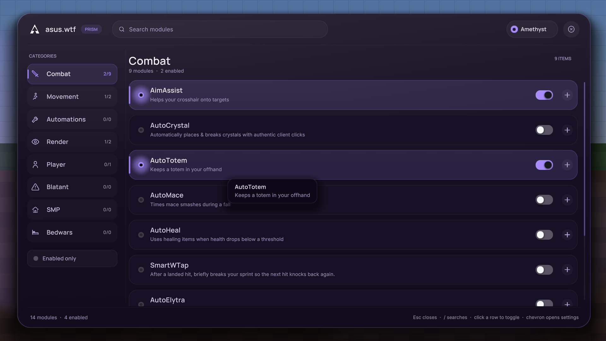

Vanilla mapping
Correct 64×32 atlas proportions, separate outer and inner faces, and transparent edge pixels where the design needs them.
A client with a real visual identity: 16 hand-built themes, 15 original capes, a live cape maker, a rebuilt Prism interface, a deep module library and secure remote updates — all in one Fabric jar.

Every cape is original pixel art built on the vanilla 64×32 atlas, with a cloth rig that sways in game. Pick one below to preview its palette, then make your own in the Cape Maker.
Correct 64×32 atlas proportions, separate outer and inner faces, and transparent edge pixels where the design needs them.
Physics, static, animated and vanilla cape modes. The cape lifts in a fall, swings on a turn and reacts to strafing.
Colours, gradients, patterns, emblems, borders, imported art, undo/redo and a saved library in the Cape Maker.
The original six are still here. Midnight, Inferno, Cyberpunk, Emerald, Bloodmoon, Lavender, Arctic, Sunset, Obsidian and Amethyst Night each carry their own palette and animated backdrop, not a recoloured copy of the last one. Pick one below to tint this page.
Accent, background and secondary colours. Gradient direction and speed. Animation and particle intensity. Blur, transparency and UI brightness. Every control is live and saved with your config.
A compact single-pane menu with category navigation, fast search, expandable module cards, inline settings and transitions that never stutter. Built on the GPU UI from the first pixel.
Collision-aware A* with step-up, drops, water, danger costs, stuck detection and replanning. The Dia SMP bot reads the world, not a flat grid.
Version manifests, release history and in-game notices. Every release publishes a SHA-256 hash, and the client only accepts HTTPS update links.
Publish releases, manage keys and testers, read audit logs and see download counts. Server-side authorisation, rate limits and audit; the page never stores the password.
Vanilla armor trims and banner-pattern shields on local render-state copies, 29 cape designs, a pixel cape maker with undo/redo, wings, hats and followers. No fake overlay textures.
Combat, visuals, movement, player and world modules with real settings and saved configuration. No decorative toggles.
Rendered by the client's own layout code at 1920×1080. No mockups.
Fabric 1.21.11 · loader 0.20.1 · Java 21+. Drop it in mods, paste your key once, press Right Shift.
60e6ad93f3d1ef6df5b1f5afdf6fa59b4fdb0c38d8f72041b43b155ef8c5c1d3Run the installer for Minecraft 1.21.11 with loader 0.20.1, then launch once to create the mods folder.
Put asus-wtf-1.1.0.jar in .minecraft/mods with Fabric API. Mod Menu and Cloth Config are optional.
Launch the game, press Right Shift, paste your key. One key binds to one machine; ask for a reset if you change PCs.
Every setting saves as you change it. Configs can be named, shared and auto-loaded per server.
Sixteen hand-built themes, fifteen original capes, a pixel cape maker, dragon cosmetics paused and a rebuilt Dia SMP navigation and escape stack.
Six original animated themes, theme editor, Prism 2.0, website and admin redesign, secure sha256 release pipeline.
SmpPathfinder A* with collision costs, hole detection, pillar and wind-charge escape, stuck replanning, bot debug HUD.
Key validation hardened against network failures, expiry boundaries corrected, config migration and render fixes.
From the key channel in the Discord. One key unlocks one machine; resets for a new PC are handled there too.
No. The client only sends the key plus a hashed install id to the licence server. No Microsoft password, email or Discord token is ever read.
A valid key stays valid. The last successful check is cached for 72 hours, and a network error is reported as a network error — never as an expired or revoked key.
Yes. The client renders separately from Sodium's chunk pipeline, and companions and capes use an opaque layer so shaders cannot make them see-through.
No. The client checks the published manifest, shows an in-game notice when a newer build exists and only displays HTTPS links. It never auto-installs or executes anything from a response.
Administrators can create expiring, audited IP and HWID exemptions; usernames and account IDs annotate a normal key instead of replacing one. Every exemption is checked on the server, never by the client.
It is built for private worlds, testing and servers that allow client mods. Any module that changes movement or combat can be detected by a server; use it only where the server permits it.
One jar. Sixteen themes. Fifteen capes that move with you.